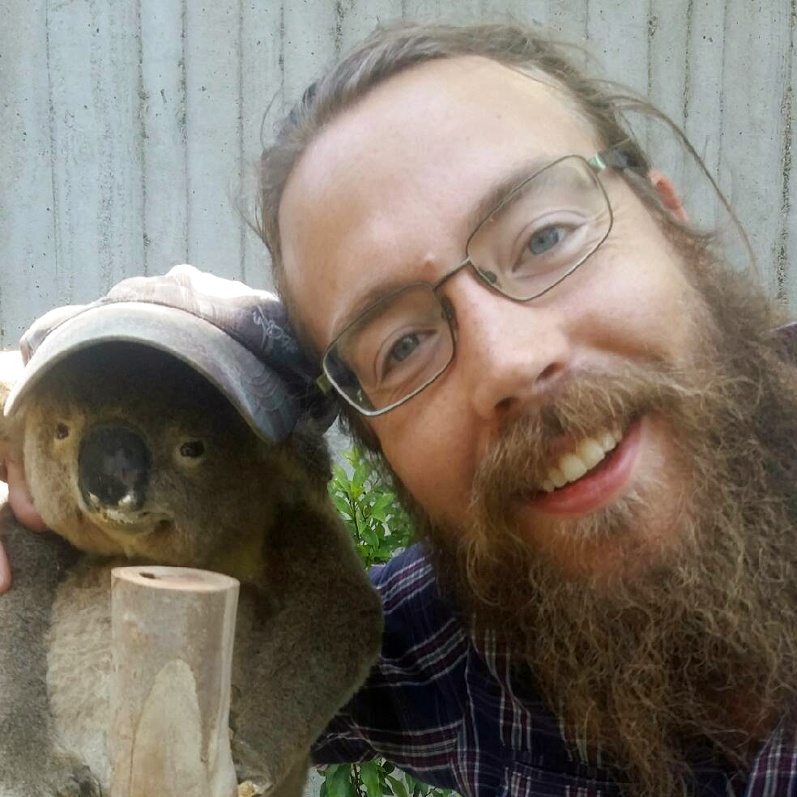

Thomas Guillerme
Macroevolution and macroecology
NERC Independent Researcher Fellow, University of Sheffield (UK)
@TGuillerme@mastodon.social
I am an evolutionary biologist that's interested in understanding how does biodiversity arise and how is it maintained in an ever changing environment. One key challenge in tackling this question is understanding the links between species traits and biodiversity through time and space. To investigate that I like developing, testing and implementing methods to analyse traits, from phylogenetic theory all the way to macroevolution and macroecology.
I am a strong advocate for open research and actively share my work and methods through open source outputs (with creative common license); and through promoting reproducibility in research. I am also dedicated to build a better academia that's made by academics for academics.